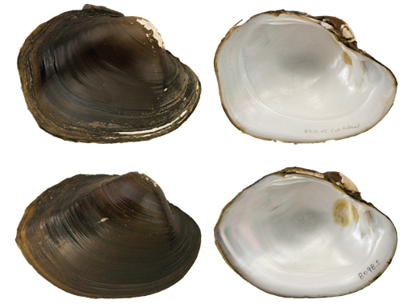

Lampsilis satura (Lea, 1852)
Sandbank Pocketbook

Lampsilis satura – top image, female, Village Creek [Neches River drainage], length 89.0 mm; bottom image, male, Village Creek [Neches River drainage], length 106.0 mm.
Identification
Shell structure: thin in smaller specimens but becoming moderately thick in larger individuals; inflated.
Shell outline: subelliptical to subovate.
Posterior ridge: broadly rounded to sharp.
Shell color: greenish-yellow, tan, greenish-brown, dark brown, and black; coloration can be lighter on the beaks; surface glossy.
Rays: fine, unbroken, green or black rays, some individuals may also lack rays.
Shell texture: smooth.
Umbo: high and broad, elevated above the hinge line; umbo cavity deep.
Umbo sculpture: may consist of a series of straight or wavy ridges.
Pseudocardinal teeth: large, erect, compressed, triangular, and serrate, 2 in left valve, nearly parallel to the hinge line, may be slightly divergent or appear as a single tooth, and anterior tooth larger than posterior, 1 tooth in the right valve.
Lateral teeth: long, thin, slightly curved, and may be enlarged at the posterior end, 2 in left valve, 1 in right valve.
Interdentum: almost absent or long and narrow.
Nacre: white; iridescent posteriorly.
Other: sexually dimorphic such that the posterior margin is broadly rounded or truncated in females, and narrowly rounded to pointed in males.
General Range
San Jacinto east to the Sabine River of Texas.
Habitat
Occurs in small streams, but not far into the headwaters, to large rivers in slow to moderate current in sandy mud to sand and gravel substrate. Found primarily in nearshore habitats such as banks and backwaters.
Legal listing status
USFWS: None
Texas: State Threatened